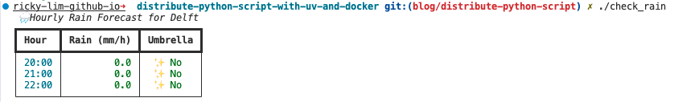
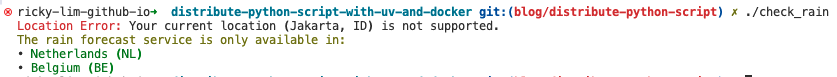

This guide focuses on simplicity for single Python scripts but does not discourage creating Python packages for better maintenance. You'll learn how to distribute Python scripts effectively, ensuring they are easy to run and share.
In this guide, I will demonstrate how to share a Python script effectively. We will utilize UV for dependency management and script execution, and Docker for seamless distribution.
We'll use a practical example: a weather forecast script, check_rain which helps determine if you need an umbrella.
This is how the script looks like:

If you are not located in the Netherlands (NL) or Belgium (BE), the script will show an error message indicating that the location is not supported. This ensures that the script only provides forecasts for supported regions.

Installation is straightforward on all major operating systems. Below are the instructions for Linux and macOS:
wget -qO- https://astral.sh/uv/install.sh | sh
The check_rain script delivers local weather forecasts for the Netherlands and Belgium using Buienradar API. It showcases the following features:
# After downloading the script, ensure the script is executable
$ chmod +x check_rain
# Run the script
$ ./check_rain
The format of the script is as follows:
#!/usr/bin/env -S uv run --script
# /// script
# requires-python = ">=3.12"
# dependencies = [
# "requests",
# "rich",
# ]
# ///
# Your Python script here built collaboratively with your AI assistant
In the beginning of the script, we add the following header:
#!/usr/bin/env -S uv run --script.
This nifty shebang line tells the system to use uv to run the script.
I learned this cool trick from Trey Hunner's blog:
Lazy Self-Installing Python Scripts with UV.
After that, the script includes metadata using the following comment:
# /// script
# requires-python = ">=3.12"
# dependencies = [
# "requests",
# "rich",
# ]
# ///
This metadata is harnessed by UV to magically manage Python versions and dependencies for you. It intelligently handles installation and caching, ensuring fast and reliable script execution every time you run it.
The rest of the script is a normal Python script 🐍, which you can develop further with your favourite IDE or a simple text editor like VIM.
To format your script, use the following command:
uvx ruff format check_rain
Note: uvx is included with the UV installation and provides a convenient way to manage and run your Python scripts in isolated environments.
Now the script is ready to be distributed.
To make the script runnable from anywhere, place it in your $HOME/.local/bin directory.
cp check_rain $HOME/.local/bin
# Ensure that the directory is recognized by your shell (.e.g zsh)
echo 'export PATH="$HOME/.local/bin:$PATH"' >> ~/.zshrc
Now the script is runnable from anywhere.
If installing uv is not an option, you can distribute the script using Docker.
The example below shows how to leverage uv in the Dockerfile to pre-install dependencies.
FROM python:3.12-slim-bookworm
COPY --from=ghcr.io/astral-sh/uv:latest /uv /uvx /bin/
WORKDIR /app
COPY check_rain .
# Pre-install script dependencies
RUN sed -i '1d' check_rain && \
uv export --script check_rain --format requirements-txt > requirements.txt && \
uv pip install --system -r requirements.txt
CMD ["python", "check_rain"]
To simply package the script:
# Build the docker image
docker build -t check_rain .
# Save the image to a tar.gz file
docker save check_rain | gzip > check_rain.tar.gz
Now the image is ready to be distributed as check_rain.tar.gz.
To load and run the Docker image from the tar.gz file:
# Load the docker image
gunzip -c check_rain.tar.gz | docker load
# Run the image
docker run -it check_rain
Simplified Development and Execution with UV: The script header specifies the required Python version and dependencies, ensuring consistency across different environments.
Seamless Distribution with Docker: By coupling UV with Docker, we can create a Docker image that includes all necessary dependencies. This allows us to distribute our Python script as a self-contained package that can run anywhere Docker is supported.
By leveraging these tools, you can ensure that your Python scripts are easy to develop, run, and distribute, providing a robust solution for script management and execution.
This guide is designed to help your Python script thrive by making it accessible, reliable, and easy to share with others.